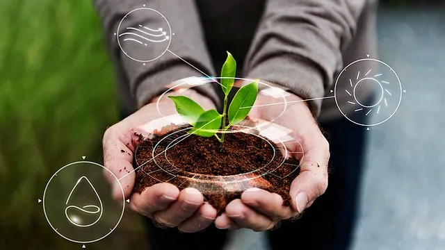

Distribuição de Recursos
Conforme a população cresce, a pressão sobre os recursos naturais também aumenta. A agricultura também deve aumentar sem causar grandes impactos negativos ao meio ambiente. Envolvendo a utilização de tecnologias como a agricultura de precisão, ela promove o uso eficiente de água e fertilizantes, a biotecnologia que ajuda no aumento da resistência das culturas e na sua produtividade. A prática agrícola sustentável é algo crucial que é promovido, a preservação do solo, preservação da biodiversidade e a redução de emissão de gases com efeito estufa.
Mais um aspecto importante é a garantia de que todos tenham acesso à alimentação. Envolvendo o desenvolvimento de políticas que combatam a fome, desigualdade e pobreza e que tenham acesso a alimentos ricos em nutrientes e saudáveis para as populações vulneráveis. É muito importante a redução no desperdício dos alimentos, sendo a maioria dos alimentos produzidos sendo jogados fora.
Tendo o aumento da população, a segurança alimentar se torna cada vez mais um assunto importante. Tendo como raciocínio quanto mais pessoas nascem mais a procura por alimentos consequentemente cresce também.
A segurança alimentar é o equilíbrio entre a produção sustentável de alimentos, e o acesso justo aos alimentos e implementar estratégias para reduzir o desperdício. Envolvendo inverter em novas tecnologias agrícolas mais atualizadas, a biotecnologia e a agricultura de precisão.